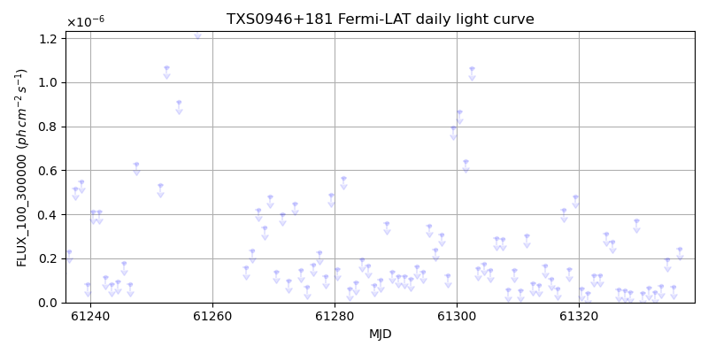
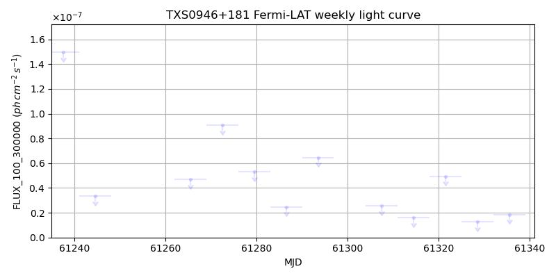
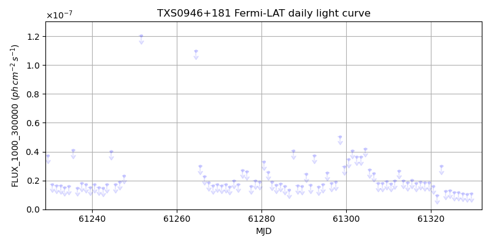
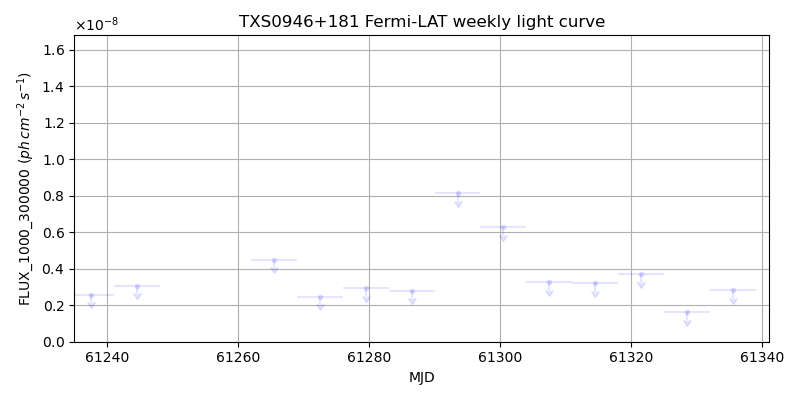

LAT Lightcurve site: https://fermi.gsfc.nasa.gov/ssc/data/access/lat/msl_lc/source/TXS_0946p181
NED: Query
Time of last update of this page: UT: 2026-10-30 15:21 (MJD: 61343.640)
| Property | Value |
|---|---|
| R.A. | 9:49:39.84 |
| Dec. | 17:52:48.0 |
| z | 0.694 |
| 3FGL SpectrumType | |
| 3FGL PL Index | -1.00 |
| 3FGL Flux_100_300000 | -1.00e+00 |
| 3FGL Flux_1000_300000 | -1.00e+00 |
| 3FGL Flux >200 GeV | -1.00e+00 |
| 3FGL Extrap. Crab >200 GeV | -1.00 |
| 3FGL Flux After EBL Absorption >200GeV | -1.00e+00 |
| 3FGL EBL Crab Fraction >200GeV | -1.00 |

| MJD | dMJD | Flux | dFlux | Frac3FGL | FracCrab>200GeV | EBLFracCrab>200GeV |
|---|---|---|---|---|---|---|
| 61338.50 | 0.50 | 1.23e-07 | 0.00e+00 | 0.00 | 0.00 | -0.00 |
| 61339.50 | 0.50 | 9.40e-08 | 0.00e+00 | 0.00 | 0.00 | -0.00 |
| 61340.50 | 0.50 | 2.95e-07 | 0.00e+00 | 0.00 | 0.00 | -0.00 |
| 61341.50 | 0.50 | 8.69e-08 | 0.00e+00 | 0.00 | 0.00 | -0.00 |
| 61342.50 | 0.50 | 1.23e-07 | 0.00e+00 | 0.00 | 0.00 | -0.00 |

| MJD | dMJD | Flux | dFlux | Frac3FGL | FracCrab>200GeV | EBLFracCrab>200GeV |
|---|---|---|---|---|---|---|
| 61307.50 | 3.50 | 2.56e-08 | 0.00e+00 | 0.00 | 0.00 | -0.00 |
| 61314.50 | 3.50 | 1.60e-08 | 0.00e+00 | 0.00 | 0.00 | -0.00 |
| 61321.50 | 3.50 | 4.94e-08 | 0.00e+00 | 0.00 | 0.00 | -0.00 |
| 61328.50 | 3.50 | 1.26e-08 | 0.00e+00 | 0.00 | 0.00 | -0.00 |
| 61335.50 | 3.50 | 1.85e-08 | 0.00e+00 | 0.00 | 0.00 | -0.00 |

| MJD | dMJD | Flux | dFlux | Frac3FGL | FracCrab>200GeV | EBLFracCrab>200GeV |
|---|---|---|---|---|---|---|
| 61338.50 | 0.50 | 1.43e-08 | 0.00e+00 | 0.00 | 0.00 | -0.00 |
| 61339.50 | 0.50 | 1.60e-08 | 0.00e+00 | 0.00 | 0.00 | -0.00 |
| 61340.50 | 0.50 | 1.78e-08 | 0.00e+00 | 0.00 | 0.00 | -0.00 |
| 61341.50 | 0.50 | 1.66e-08 | 0.00e+00 | 0.00 | 0.00 | -0.00 |
| 61342.50 | 0.50 | 1.41e-08 | 0.00e+00 | 0.00 | 0.00 | -0.00 |

| MJD | dMJD | Flux | dFlux | Frac3FGL | FracCrab>200GeV | EBLFracCrab>200GeV |
|---|---|---|---|---|---|---|
| 61307.50 | 3.50 | 3.28e-09 | 0.00e+00 | 0.00 | 0.00 | -0.00 |
| 61314.50 | 3.50 | 3.21e-09 | 0.00e+00 | 0.00 | 0.00 | -0.00 |
| 61321.50 | 3.50 | 3.69e-09 | 0.00e+00 | 0.00 | 0.00 | -0.00 |
| 61328.50 | 3.50 | 1.62e-09 | 0.00e+00 | 0.00 | 0.00 | -0.00 |
| 61335.50 | 3.50 | 2.81e-09 | 0.00e+00 | 0.00 | 0.00 | -0.00 |
--------------------------------------------------------- Using user-supplied coords: 9:49:39.84 17:52:48.0 2000 --------------------------------------------------------- FLWO UT night of: 2026-10-31 Local Sid. @ Midnight: 02:14 Sunset (-15.0) (local, UT): 18:44 01:44 Sunrise (-15.0) (local, UT): 05:31 12:31 Moonrise (local, UT): 21:49 04:49 Moonset (local, UT): Moon phase: 0.68 --------------------------------------------------------- AzTime LSID UT Obj_el Obj_az Mn_el Mn_az Sep. --------------------------------------------------------- 18:44 20:57 01:44 -38.9 343.6 -27.0 28.6 39.1 19:14 21:27 02:14 -40.3 352.7 -23.9 34.8 38.8 19:44 21:57 02:44 -40.5 2.1 -20.2 40.4 38.4 20:14 22:27 03:14 -39.8 11.4 -16.1 45.6 38.0 20:44 22:58 03:44 -38.0 20.4 -11.6 50.4 37.6 21:14 23:28 04:14 -35.4 28.7 -6.7 54.8 37.3 21:44 23:58 04:44 -31.9 36.2 -0.9 58.8 37.0 22:14 00:28 05:14 -27.8 43.0 3.8 62.5 36.6 22:44 00:58 05:44 -23.2 49.1 9.2 66.0 36.3 23:14 01:28 06:14 -18.2 54.5 14.8 69.3 36.0 23:44 01:58 06:44 -12.8 59.5 20.6 72.5 35.8 00:14 02:28 07:14 -7.2 64.0 26.5 75.5 35.5 00:44 02:58 07:44 -0.6 68.1 32.5 78.6 35.2 01:14 03:28 08:14 4.8 72.0 38.5 81.7 35.0 01:44 03:58 08:44 10.9 75.7 44.7 84.9 34.8 02:14 04:28 09:14 17.1 79.3 50.8 88.3 34.5 02:44 04:59 09:44 23.4 82.9 57.0 92.2 34.3 03:14 05:29 10:14 29.8 86.6 63.2 97.0 34.1 03:44 05:59 10:44 36.2 90.4 69.3 103.5 33.9 04:14 06:29 11:14 42.6 94.6 75.2 113.7 33.7 04:44 06:59 11:44 48.9 99.3 80.4 133.8 33.5 05:14 07:29 12:14 55.2 105.0 83.0 177.6 33.4 05:31 07:46 12:31 58.7 108.9 82.2 206.9 33.2 --------------------------------------------------------- Dark hours >55 deg.: 0.00